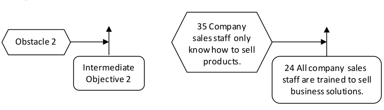

ссылка препятствие-предварительное условие (prerequisite-obstacle link) - строительный блок для дерева предварительных условий (дерево предпосылок). Первым шагом в построении дерева предпосылок является выявление препятствий, которые блокируют или препятствуют достижению желаемой системной цели, условия, состояния существования или желаемого действия. Во-вторых, определяется промежуточная цель, которая преодолевает каждое препятствие. Эти две сущности составляют связь предпосылок-препятствий.
Использование: Препятствия обычно определяются строителями дерева предварительных условий, поскольку они предвидят возможные блокировки или осложнения при внедрении инъекции для достижения желаемого эффекта или амбициозной цели. Преодоление препятствия требует определения и достижения промежуточной цели. Связи предпосылок-препятствий размещаются на каталожных карточках или стикерах и упорядочены в зависимости от того, какие промежуточные цели идут первыми, вторыми, параллельными и т. д., начиная с настоящего до достижения конечной цели системы, условия и т. д.
35 Торговый персонал компании только Препятствие 2 знает, как продавать товары. Промежуточный 24 Все продажи компании Цель 2 Сотрудники обучены продавать бизнес-решения.

См.: амбициозная цель, желаемый эффект, инъекция, дерево предпосылок, промежуточная цель, мыслительные процессы.
Примечание ИА: Предварительное условие (препятствие) используется в дереве предпосылок, которое помогает спланировать дальнейшие действия. Если строить дерево, только лишь из действий (не делая промежуточного этапа с выявлением препятствий), то мысль уходит в сторону, и дерево начинает отображать то, что ты и так знаешь. Если описывать дерево как последовательность целей и препятствий, которые мешают эту цель выполнить, то мысль постоянно упирается в то, о чем ты не думал. Получается что формат цель-препятствие выводит тебя на то, о чем ты не думал.
Примечание АВ: Дерево предпосылок читается так: ДЛЯ ДОСТИЖЕНИЯ цели А НЕОБХОДИМО И НЕДОСТАТОЧНО достигнуть “промежуточную цель 1” ПОТОМУ ЧТО есть препятствие 1. Таким образом термин “предпосылка” как термин и слово “предпосылка” в “дереве предпосылок” это разные понятия.
#мп
Синоним: prerequisite-obstacle link